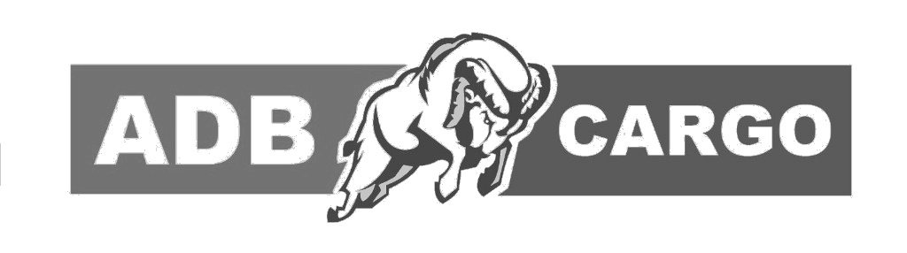
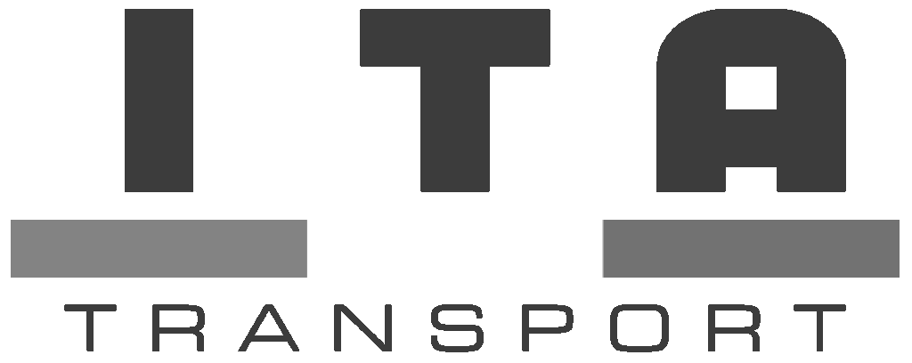

Seženu vám zakázky
Spojím vás napřímo s výrobními závody a sklady, které právě teď potřebují spolehlivé dodávky do 3,5 t.


Hledám, co tu pro vás máme…
Porovnávám vaše kapacity a trasy s aktuální poptávkou výrobních firem.
Našel jsem 14 firem, které teď shánějí partnery a mohu vás představit.
Tyto výrobní firmy odpovídají vašemu kraji, typu vozidel i časovým možnostem a aktuálně řeší posílení dopravy nebo expedice.
Pojďme se spojit
Rád o vás zjistím víc a pokud si sedneme, představím vás firmám a domluvím výhodnou spolupráci.
Dopravců je hodně, a volná místa u firem se proto rychle plní. Čím dřív se ozvete, tím větší máte šanci, že ve vašem kraji ještě bude volno.
Jak to funguje:
Nejsem spedice - spolupráce funguje formou jednorázového dohození a vyjednání přímé spolupráce, procenta z jízd si pak už neberu. Pokud budete spokojení, můžeme se pak pobavit o delší spolupráci.
Takto jsem propojil už řadu dopravců. Dokud mám u vedoucích logistiky dveře otevřené a firmy aktivně poptávají další auta, můžete toho využít i vy.
Cena je 15 tis. Kč. a zahrnuje celý proces od prvního kontaktu s firmou, domluvení vašich podmínek, až do chvíle, kdy pro ně poprvé vyjedete.
V praxi se vám tato částka vrátí už během prvních 3 až 4 přímých jízd, na kterých neodvádíte provizi spedici – všechny další měsíce už jedete čistě do vlastní kapsy.
Samozřejmě mi záleží na tom, aby byly firmy spokojené. Proto se s vámi preferuji nejdřív spojit a třeba se i sejít, abychom měli jistotu, že všechno bude v pořádku. Čím více zkušeností máte, tím lépe, ale pomáhám i novějším dopravcům. Napište mi a uvidíme, co pro vás najdu:
Buď vyjedete pro novou přímou firmu, nebo vám vrátím peníze
Platíte pouze za reálný výsledek. Pokud by se náhodou nepodařilo domluvit spolupráci a dovést vás k první jízdě, dostanete 100 % částky okamžitě zpět na účet.
Napište mi na WhatsApp
Děkuji za zájem.
"S Michalem se mi spolupracovalo skvěle, je hodně pracovitý a s lidmi to umí. To je něco, co mi jako řidiči s odjetými 15 lety scházelo. Nevzdává se a pracuje i o víkendu, jsem za naší spolupráci rád."
Toto je pouze obecný seznam firem bez napojení na vaše odpovědi
V obecném seznamu níže si musíte firmy obvolávat sami naslepo. Pokud chcete představit přímo firmám, které teď reálně shánějí dopravce podle vašeho profilu (s garancí vrácení peněz), přejděte na osobní propojení.
Obecný seznam výrobních firem v ČR
Základní přehled výrobních podniků z rejstříku ARES (CZ-NACE 10–33).
Nechcete ztrácet čas studeným obvoláváním obecného seznamu?
Představím vás přímo firmám, které teď shánějí partnery a domluvím vám podmínky až po první jízdu.